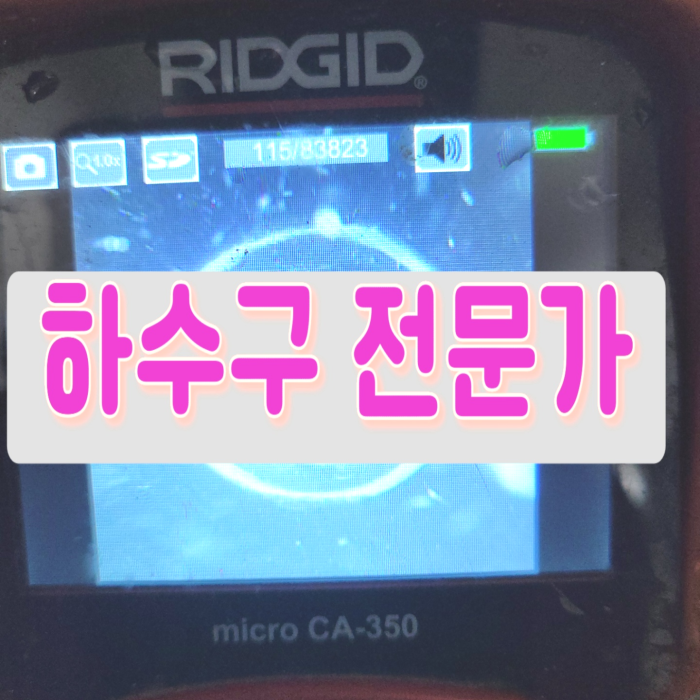
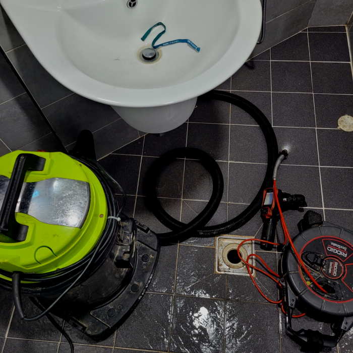
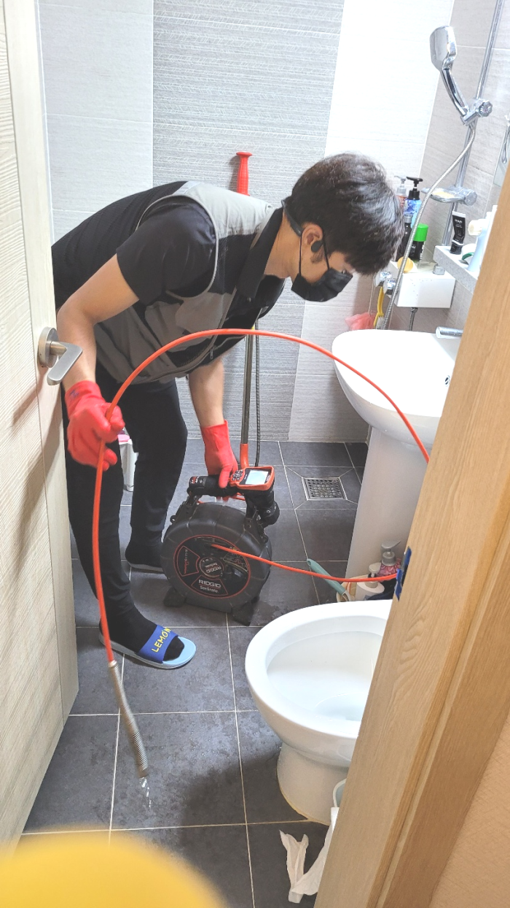
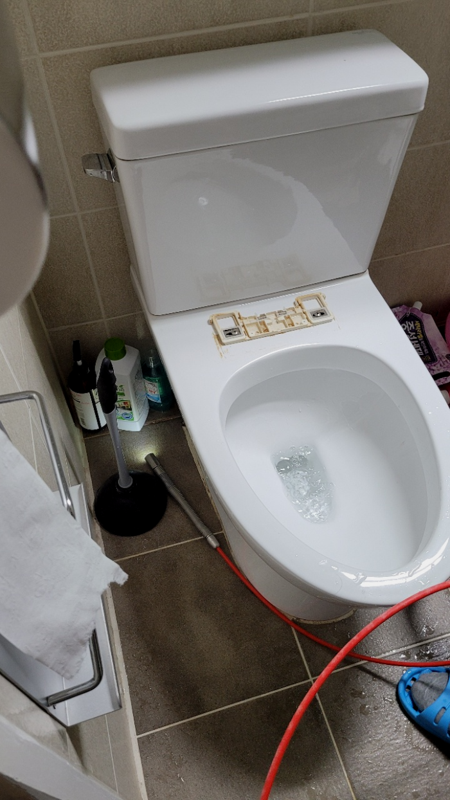
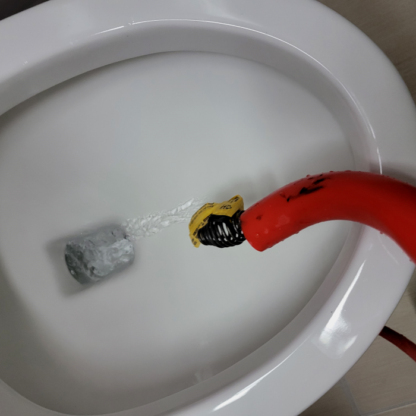
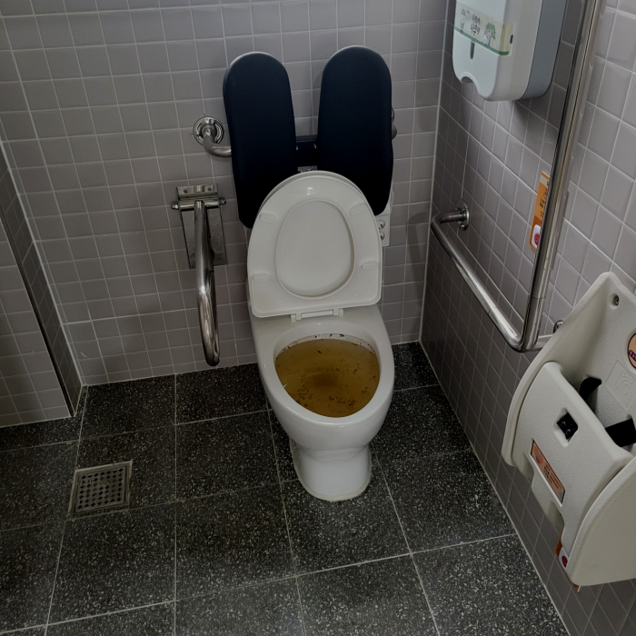
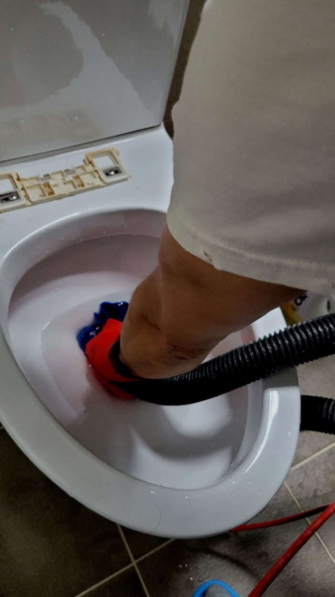

🏠 광명 대변기막힘 하안동 소하동 변기역류 수리 뚫는업체
용인 싱크대막힘 전문 시공 후기

📋 작업 개요
- 위치: 용인
- 서비스 유형: 싱크대막힘, 변기막힘, 하수구막힘, 배관막힘, 역류해결, 뚫는업체, 배관청소, 고압세척
- 작업 일시: 2024. 1. 13. 18:28
- 업체명: 하수구수사대 (010-5615-2118)
🔍 문제 상황
반갑습니다^^
설비전문업체 "하수구수사대"를 찾아주셔서 감사합니다.
이번글에선 막혀버린 배출구 배관해서 말해드리겠습니다.빌라등 물을사용해야하는 곳이있다면 배출구가 존재하는데요. 이러하듯 당연한존재가 막히면 곤혹스러울텐데요. 문제없이 쓰고있던 배출구시설이 갑자기 망가진다면 불편해지게됩니다.
보이지 않는 배수관가 막힌 경우에는 고객님께서는 더욱이 손을 쓸수 없는 상황에 당혹감을 느끼실 수밖에 없게 될 것인데오ㅛ. 이럴때는 혼자서 해결을 하려고 하지 마시고 반드시 배수관전문업체를 통해서 해결을 하실 것을 추천드립니다.

🔎 원인 분석
💡 전문가 진단: 광명 대변기막힘 하안동 소하동 변기역류 수리 뚫는업체
광명 대변기막힘 하안동 소하동 변기역류 수리 뚫는업체
상태가 더욱심각해지면 물이 새는 증상이 나오게 되는데요 안고치고 방치한다면 여러배관에 같은 증상이 나타나거나 각종 냄새들이 온 집안과 공간을 괴롭히게 됩니다.
어떤 일이든 비 전문가는 절대 무리하게 뚫기 위한 시도를 해서는 안됩니다. 인터넷에서 쉽게 얻을수 있는 배출관정보들을 대부분 미비한 효과에서 그치고 근본적인 원인은 해결해 주지 못합니다.
배수배관 내부는 육안으로 볼 수 없는 만큼 막힌 원인을 찾아내기 위해서는 배관 내시경 작업이 필수라고 할 수 있습니다. 이는 전문 업체에서만이 장비를 통해서 해결이 가능한 것이기 때문에 배수 막힘이 발생을 하게 되면 반드시 전문 업체를 통해서 해결을 하시는 것이 좋습니다.
일상생활을 하다 보면 나도 모르게 어느 순간 막히게 되는 경험은 생각 이상으로 많아요. 우리 어떻게 관리를 하느냐에 따라 얼만큼 막혔는지 예상이 되지요. 집에서 꾸준히 청소를 해준다면 배출구한번 뚫고 나면 오래도록 사용이 가능해요.

🔧 작업 과정
급한 마음에 전문 설비업체를 찾아볼 시간도 없이 집 근처 설비가게를 찾아 대충 하수관뚫어내면 얼마 안 되어 다시 막히고 또 출장비를 지불하고 뚫어내는 손해를 보시게 될 수도 있습니다.
퇴수구 내시경 카메라 장비를 활용하면 맨눈으로 보기 힘든 좁은 배관 입구도 문제없이 확인할 수 있습니다. 호스가 얇아 어떤 퇴수구배관이라도 투입이 가능하고 카메라를 이용하여 손쉽게 배관 안 쪽의 상황을 확인할 수 있습니다. 이러한 사전 작업 없이 무작정 배관 청소 작업을 시작하면퇴수구 배관이 파손될 위험이 있습니다.
배관에관한 대부분을 처리하고있어서 막힌것만 해결하는것이아닌 설비쪽대부분을 문제를없애드리고있어요.안막혔는데 배수구안에서 고약한냄새가 날때도있습니다.원인이다다르기에 정확하게찾기위해서 금방출장가서 전체를살펴보고난후 악취를해결하고있답니다
단순히 배출관 뚫고 얼마 지나지 않아서 다시 막히는 경우도 종종 있는데 그럴 땐 기름들이 배출관배관에 단단하게 박혀 있어 좁아진 배수관으로 물이 시원하게 흘러나가지 못하고 역류하기 때문에 이럴 땐 배출관고압세척으로 배관세척을 하시는 것이 매번 뚫는 하수관 청소보다 훨씬 효과적입니다.
걸레를 빠는 과정에서 이렇게 먼지 덩어리들이 합쳐져 물과 함께 흘러내려가 배관 안쪽 곳곳에 걸리게 되면 위와 같이 하수관가 막히는 상황이 발생될 수 있습니다.
이때 사용하는 특수약품은 배관 벽에 단단하게 자리 잡은 석회를 부드럽게 풀어줌으로써 제거하기 쉬운 형태로 만들어주는데요, 시간이 지난 후 확인해 보니 거품이 꽤 올라왔습니다. 특수약품이라 해도 약품만 부으면 이물질이 알아서 떨어지는 게 아니고 전문 장비로 제거하면서 건져올려내는 작업이 중요합니다.
이런 이물질들은 샤프트 작업으로 모두 제거해 드렸습니다. 그리고 석션기를 이용해 빼내주었지요. 찐득하게 퇴수구배관 벽에 달라붙어있는 자잘한 기름때는 제거하기 복잡하지만, 그래도 샤프트 장비가 있다면 모두 없애드릴수 잇으니 거정하지 않으셔도 됩니다.
의뢰하기 전에 걱정하실 만한 것은 아마 배수구뚫는 금액 부분일 것입니다. 얼마가 필요할지 가늠이 안되는데 의뢰하기에는 겁이 나기 때문에 멈칫하실 수 있으십니다. 이를 알기에 유선상으로 안내해 드립니다.


✅ 작업 완료
다른 업체들보다 빠르고 신속하게, 고객님의 배수구문제를 해결해 드릴 수 있도록 노력하겠습니다. 전문적인 장비를 보유하고 있으며, 현장 상황 파악이 빠릅니다. 경험 많고 오래된 노하우를 갖고 있는 업체, 바로 이 곳입니다. 감사합니다.
#하수구막힘 #하수구뚫음 #하수구역류 #씽크대막힘 #싱크대역류 #오수관막힘 #하수구청소 #욕실하수구막힘 #변기막힘 #하수구뚫는비용 #싱크대수리 #화장실막힘




⚠️ 주방 싱크대 배관 막힘 예방 수칙
- ✅ 기름기가 묻은 식기나 프라이팬은 설거지 전 키친타올로 반드시 기름때를 닦아내세요.
- ✅ 주기적으로 싱크대 개수대에 뜨거운 물을 가득 받아 한 번에 내려 배관 내부 기름을 씻어내세요.
- ✅ 배수구 거름망을 미세한 필터로 사용하시고 음식물 찌꺼기가 틈으로 새어 들지 않게 관리하세요.
- ✅ 베이킹소다와 식초를 뜨거운 물과 함께 일주일에 한 번씩 부어주면 배관 살균과 막힘 예방에 좋습니다.
💡 핵심 정리
- 확실한 장비 작업(내시경 점검 및 샤프트 스케일링)으로 원인을 뿌리 뽑습니다.
- 작업 후 1년 이내에 동일한 부위 재발 시 100% 무상 A/S 서비스를 보장합니다.
- 서울 · 경기 · 인천 전 지역에 24시간 언제든 긴급 출동할 수 있도록 항시 대기 중입니다.
❓ 자주 묻는 질문 (FAQ)
🚨 용인 싱크대막힘 문제로 고민이신가요?
정확한 원인 진단과 확실한 시공으로 재발 없는 해결을 약속드립니다.
24시간 긴급 출동 | 서울 · 경기 · 인천 전지역 | 1년 내 재발 시 무상 A/S